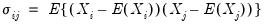
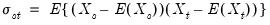
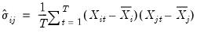

|
|
|
 for the i-th cross-section,
. The contemporaneous covariances are a measure of association (dependence) between the data for different cross-sections at a given point in time.


 and periods
and periods  . In this setting, we focus on a single random variable
. In this setting, we focus on a single random variable  , with individual observations denoted
, with individual observations denoted  .
. for different cross-sections (or time periods) as being distinct random variables. This unstacking of a single random variable into multiple random variables permits us to define measures of association between cross-sections or periods for a given panel series.
for different cross-sections (or time periods) as being distinct random variables. This unstacking of a single random variable into multiple random variables permits us to define measures of association between cross-sections or periods for a given panel series. :
: :
: . The within cross-section covariances measure the association between the data in different periods for a given cross-section.
. The within cross-section covariances measure the association between the data in different periods for a given cross-section.